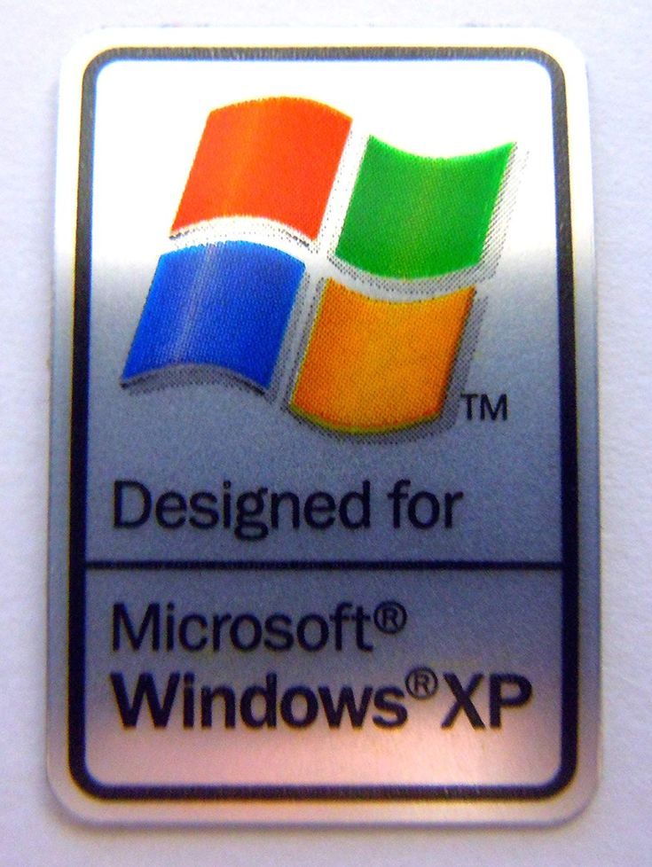

кароче есть overflow. там бывает x и y. сначала пишешь x потом y. hidden - тупо скрыть,scroll - всегда полосы, auto - полосы когда надо
для того, чтобы картинка не вылезала из коробки надо поставить max-width: 100%. это, вообще-то, не айс.
типо вот картинка по дефолту. не айс. можно ограничить процентами, а можно дать свойства object-fit
